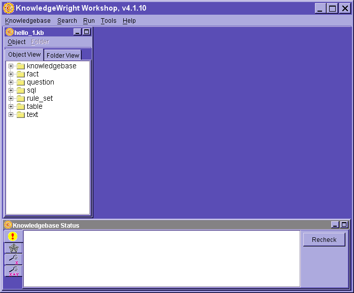
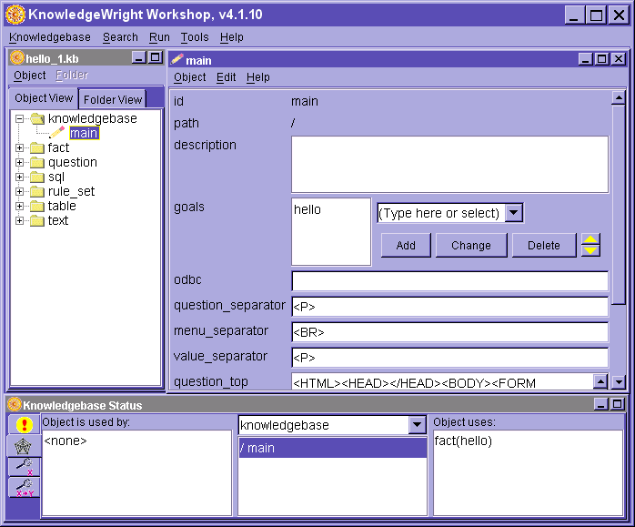
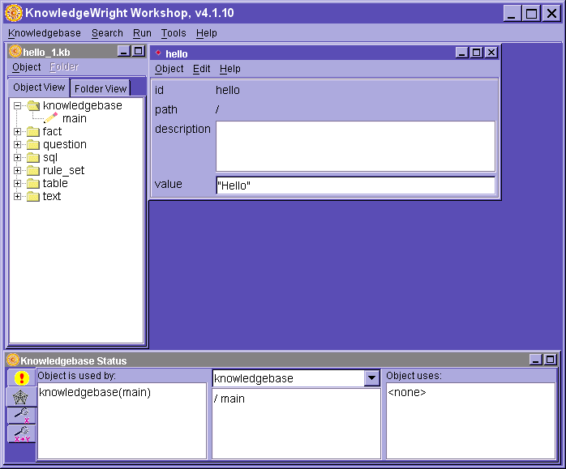
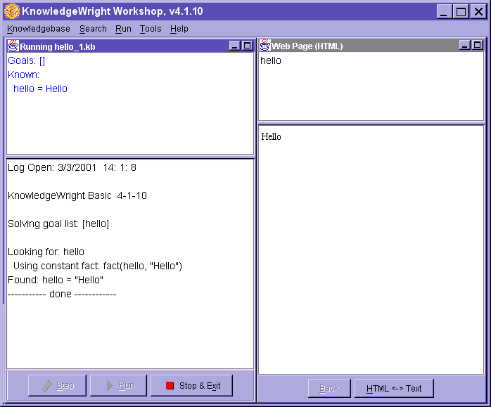

Tutorial:
Facts and Goals
The first 'hello'application
samples/basic/tutorial/hello_1
The Basic Jig contains a goal-driven reasoning engine.
That means you specify a goal and the reasoning engine uses the knowledgebase
to try to find a value for that goal.
For the first sample, the name of the goal will be 'hello', and the value of
the goal with be the text string "Hello". The ""s indicates
a value which is a text string.
For all the tutorial samples, we recommend you put your work in a directory,
something like my_kbs. You can also view the pre-built samples for each tutorial
chapter in the samples directory.
Create the goal 'hello'
- Open KnowledgeWright Workshop.
- Select Knowledgebase/New.
- Type in the name of knowledgebase, hello_1 and press 'Save'.
- In the Knowledgebase Type dialog box that appears, choose 'basic' then
press 'OK'.
- You should see a screen similar to the one below. The tree on the left
shows all the objects in your knowledgebase, and the status
window on the bottom provides alot of useful information about the structure
and contents of your knowledgebase.

- Click on the + icon in front of the heading 'knowledgebase'. You should
see one entry, labeled 'main'. Every new knowledgebase starts out with a
knowledgebase object named 'main'. It is where you set the goals.
- Double-click on 'main'. You'll see an editor for the knowledgebase object
appear. You might have to scroll to see the full editor.
- Above the 'add' button, type over "(Type here
or select)" the word "hello" (no quotes), and press 'Add'.
hello should appear as the only item in the list of goals.

- Select Object/Save & Close from the menu.
- If you want to see the relationships between objects (as shown above),
press on the spider web tab in the status window.
We've now specified a starting goal for the system. When this knowledgebase
is run, the first thing it will do is try to find a value for the fact 'hello'.
Adding a Constant Fact 'hello'
There are many types of knowledge objects that might be
used to help satisfy the goal of finding a value for 'hello'. The simplest is
just a constant 'fact', named 'hello', with a pre-specified value. In this case
the value will be the string "Hello".
- Select Object/New from the panel on the left.
- Select type 'fact'.
- Type in the name of the fact, hello, and press the 'OK'
button.
- Type in the value, "Hello". Your screen should
look like:

- From the object menu, select Object/Save & Close.
- From the main menu, select Knowledgebase/Save.
You've now developed your first knowledgebase.
Test Running Hello
- From the main menu, select Run/Run
- You'll see a result similar to this:

The lower right panel is the answer to find the goal for 'hello', which is
Hello.
The upper left panel shows the state of the consultation.
The lower left panel shows the trace of the reasoning steps that led to the
result shown.
Congratulations, you've built and run your first knowledge base.
Copyright ©1996-2002 Amzi! inc. All Rights Reserved. Amzi!,
KnowledgeWright and WebLS are registered trademarks and Subscription Plus and
Logic Server are trademarks of Amzi! inc.